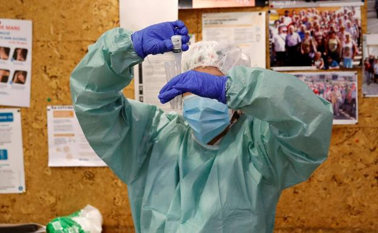

Tres muertes por covid en las últimas 24 horas, la cifra más baja en diez días
Comenzará con personas mayores de 50 años con patologías graves, usuarios y personal de residencias, sanitarios en primera línea y otros trabajadores de servicios críticos

Portugal prevé vacunar en una primera fase, que empezará en enero, a 950.000 de sus cerca de 10 millones de habitantes, en concreto personas mayores de 50 años con patologías graves, usuarios y personal de residencias, sanitarios en primera línea y otros trabajadores de servicios críticos.
Estos colectivos integran el primer grupo prioritario del plan de vacunación en Portugal, presentado hoy en Lisboa y que prevé un gasto de unos 200 millones de euros para adquirir 22 millones de dosis.
El coordinador del grupo de trabajo para el plan de vacunación, Francisco Ramos, explicó que en la primera fase se vacunará a 400.000 mayores de 50 años con al menos una de las patologías identificadas como de mayor riesgo: insuficiencia cardíaca, enfermedad coronaria, insuficiencia renal y enfermedad pulmonar obstructiva con soporte ventilatorio.
También se incluirá en la primera etapa a las personas internadas en residencias de mayores y otros centros asistenciales, así como sus trabajadores (250.000), y los sanitarios en primera línea y profesionales de otros servicios críticos, como las fuerzas de seguridad (300.000).
Esta primera fase, que se prolongará hasta febrero o abril en función del ritmo de abastecimiento de vacunas en el mercado, se realizará en centros de salud, a excepción de las personas internadas en residencias y sus trabajadores, quienes serán inmunizados en los propios centros.
Ancianos sin patologías, en la segunda fase
En una segunda fase, se vacunará al resto de mayores de 65 años y a los mayores de 50 con otras patologías menos graves, como diabetes, insuficiencia hepática, hipertensión arterial y obesidad, entre otras.
Esta etapa alcanzará a 2,7 millones de personas y en ella se ampliarán los puntos de vacunación, «con criterios todavía a definir en función del ritmo de abastecimiento de vacunas».
Aunque no se ha confirmado, la ministra portuguesa de Sanidad, Marta Temido, ya ha admitido la posibilidad de que las farmacias formen parte del sistema de administración de vacunas.
El resto de población será inmunizada en una tercera fase, aunque el coordinador del grupo de trabajo señaló que, si el ritmo de abastecimiento es más lento de lo esperado, se tendrán que definir más grupos prioritarios dentro de esa etapa.
Las vacunas se distribuirán con carácter universal y gratuito y la inoculación de estos compuestos será voluntaria.
En la presentación del plan, el primer ministro portugués, António Costa, dijo que «hay una luz al final del túnel, pero el túnel es todavía muy largo y bastante difícil».
Alertó de que hay aspectos que podrían obligar a retocar el calendario que no dependen de Portugal, como la producción o las licencias.
«Las dificultades comienzan aquí y serán crecientes. Será más fácil la operación en las primeras semanas, cuando tengamos pocas dosis y destinatarios limitados. Serán mucho más exigentes cuando haya más dosis» y un grupo para vacunar más extenso, señaló.
La curva se ralentiza
Portugal, que en las últimas semanas llegó a encadenar varias jornadas por encima de los 6.000 casos diarios, registra esta semana una ralentización de la curva de contagios.
Este jueves fueron notificadas 3.772 infecciones, lo que eleva el número de casos totales desde marzo a 307.618, de los que casi 74.000 están activos, según el último boletín de la Dirección General de Salud (DGS).
En las últimas veinticuatro horas se contabilizaron 79 muertes, con lo que la cifra total de fallecidos es de 4.724 desde el inicio de la pandemia, que sigue concentrada sobre todo en la región Norte (casi el 60 % de los casos de este jueves).
El número de hospitalizados sigue siendo elevado, 3.330, a pesar de que disminuye ligeramente desde ayer (ocho menos), y de ellos 525 están en cuidados intensivos.
Portugal está en estado de emergencia hasta el 8 de diciembre, pero se prevé que mañana viernes el presidente del país, Marcelo Rebelo de Sousa, promulgue una nueva prórroga.